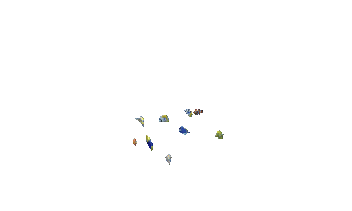

I debated making animation it's own genre, but really it's more of a medium. I feel there's a common misconception that animated movies are purely for younger audiences, but some of the best movies out there are animated (and most definitely not for kids!). "Mad God," for instance, is a crazy, stop-motion horror movie I initially watched while I was getting over a fever. That was a stupid idea. But, I still wound up loving it!
When I was younger, I had aspirations of making my own animated movies or series. While art and animation are now merely a hobby of mine, I still have a lot of love for animation and the power of hand-drawn artwork. I think it's really cool that a lot of independent animation studios have been gaining support online, and even finding a place on certain streaming services, and I'm excited to see how the medium continues evolving in the future.

© Jackson Caffrey 2026